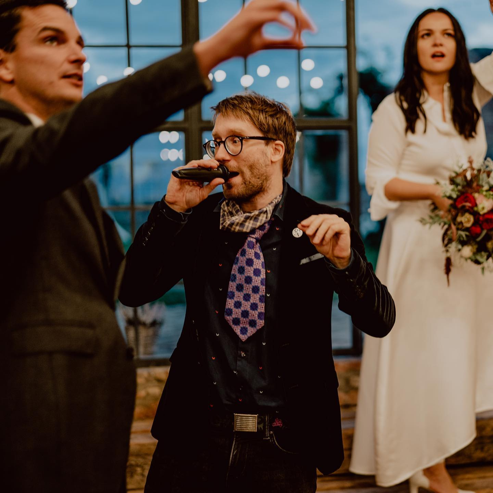

Obřady

Ať už jde o svatbu, přechod nebo osobní rituál na míru, princip je stejný.
Vytvořit prostor, ve kterém se může něco skutečně změnit.
Už mockrát jsem viděl obřady, které měly být silné –
a zůstaly prázdné.
I proto to dělám jinak.
Půjdu s Vámi do hloubky.
Budu se ptát.
Možná i na věci, které nejsou úplně pohodlné.
Ne proto, abych tlačil.
Ale abychom se dostali pod povrch.
Hledáme, co je opravdu Vaše.
Co potřebuje být vysloveno.
Co uzavřeno. Co otevřeno.
Každý obřad vzniká na míru.
Neopisujeme.
Adaptujeme.
Spojujeme nalezené body do funkčního celku.
Moje práce vychází z praxe s rituálem, šamanskými technikami
a dalšími přístupy, které propojuji podle toho, co situace žádá.
A stejně důležité jako techniky je pro mě jedno:
Váš příběh.
Ten vnímám jako posvátný.
A podle toho s ním zacházím.
A právě v těch nejhlubších momentech si dovolím lehkost.
Humor.
To nejvzácnější koření.
Formálně Vás možná neoddám.
Ale pokud cítíte, že to má být skutečné,
rád Vás tím provedu.